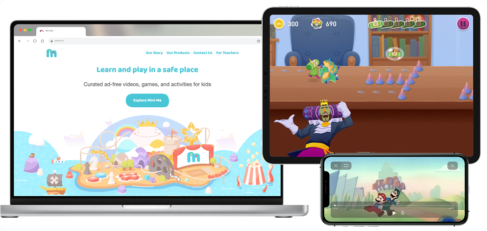

Overview
Mini-Me is a kids’ e-learning ecosystem combining educational games, interactive lessons, and streaming content under one cohesive brand. The goal was to create an engaging, intuitive, and safe environment where kids could explore and learn independently.
Challenge
The brand needed a unified product vision across multiple experiences — from interactive learning modules to a kids’ video app — while ensuring accessibility, consistency, and delight for young users.
My Role
As Product Designer & Product Manager, I led both product direction and UX/UI execution, aligning stakeholders around a clear roadmap and cohesive brand experience.
Key Responsibilities:
- Conducted competitor and market analysis to identify positioning opportunities in the kids’ edutainment space.
- Defined the product vision, structure, and feature priorities for multiple Mini-Me experiences.
- Designed intuitive UX/UI systems tailored for early learners, emphasizing clarity, safety, and fun.
- Created prototypes and design specs to validate usability with internal testers and educators.
- Collaborated closely with developers and content creators to maintain design consistency across web and mobile.
Design Highlights
- Visual Simplicity: Large touch targets, soft color palettes, and minimal text for early learners.
- Playful UX: Animations and responsive feedback reinforce learning and curiosity.
- Safe Navigation: Predictable paths and visual cues reduce errors and confusion.
Results
- Improved task completion and independent navigation by 25% in early testing.
- Increased engagement time through visually guided learning interactions.
- Positive feedback from parents and educators on clarity, accessibility, and brand cohesion.
- Established design systems that were later reused in Mini-Me Academy, enabling rapid MVP delivery within one week.
Reflection
Mini-Me taught me how to balance educational intent with playful design — merging UX strategy and product management to create experiences that are both meaningful and fun. It also reinforced how thoughtful systems design can scale across multiple products within a brand ecosystem.
 Check out Mini-Me
Check out Mini-Me
 Back to My
Work
Back to My
Work